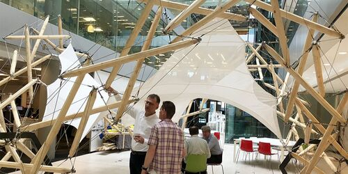
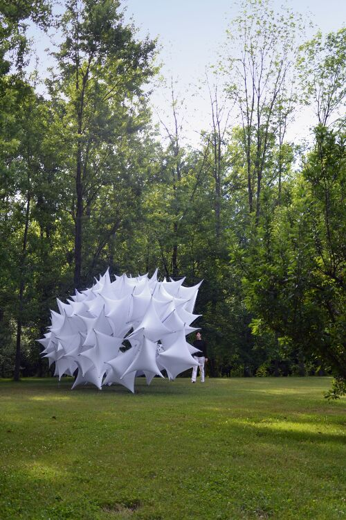
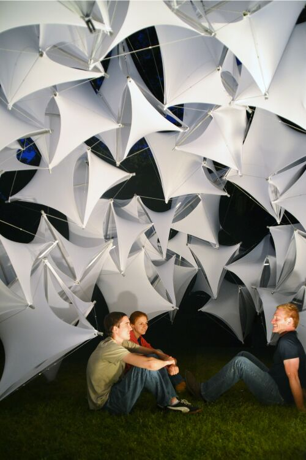
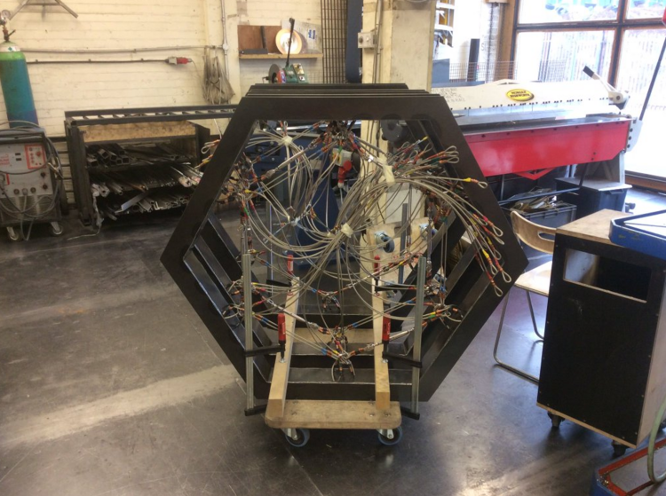
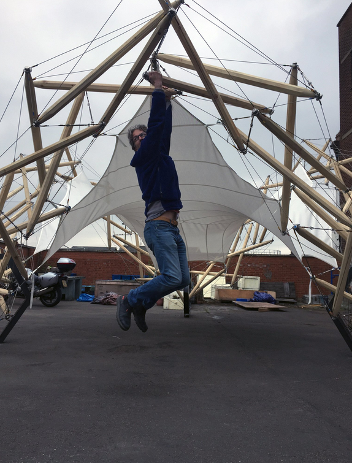
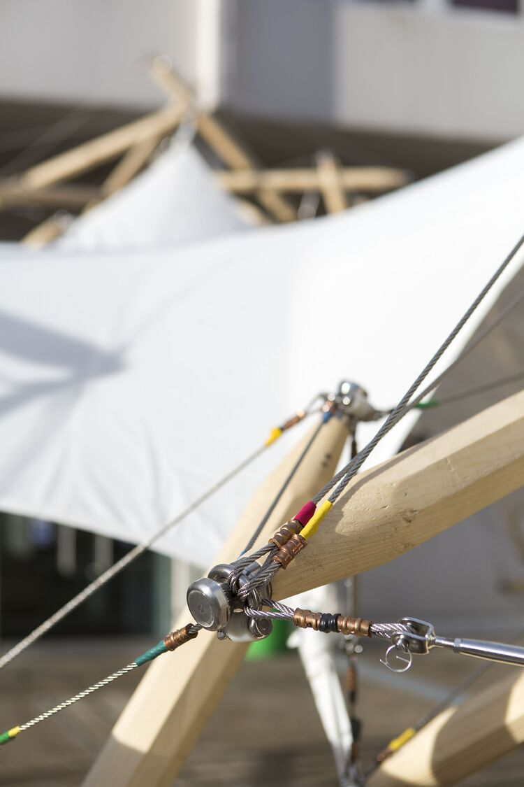
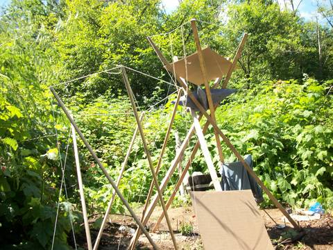
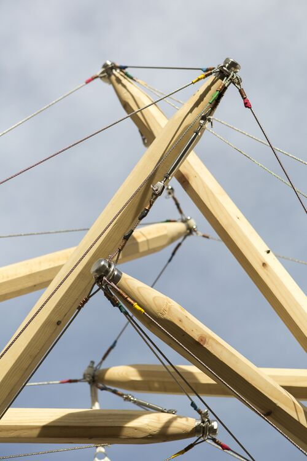
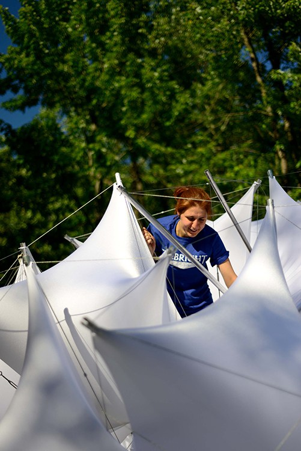

Rapid-deploy shade pavilion. The goal is a freestanding outdoor room that creates serious shaded footprint with low carried structure and a clear one-person setup routine.

The object should feel closer to lightweight architecture than camping gear.
Good precedents read as outdoor rooms, not as structure experiments.

The promise is more span and more atmosphere without event-tent bulk.

The result should feel premium enough for glamping, hospitality, and event use.
Directional glamping CAGR, useful as proof the premium outdoor category is still growing.
Forecast showing ongoing demand where design quality and premium positioning matter.
Camping and glamping search spikes show visible lifestyle pull.
Cited average glamping spend in China, a useful price-support signal.
The object should feel like a portable outdoor room, not a gear pile that happens to make shade.
The hybrid is the better product-development path today because it can prove footprint, setup clarity, and wind calmness faster. Pure tensegrity should stay alive as the higher-upside mechanism track.
Get to a believable pavilion quickly and prove real user experience.
Keep pure mechanism work wherever it buys meaningful mass, packed-size, or identity gains.
Do not drift into either a generic event canopy or a fragile engineering demo.

The packed state should look intentional and manageable.

The geometry should begin locating itself before the membrane enters the story.

The operator needs a visible yes signal, not a guess.
Once the frame is calm, the fabric turns mechanism into place.

Proof that even a stripped-down tensegrity object can make outdoor shade.

Useful for reading how much visual order the frame can carry.

The finished object only feels effortless if the build sequence is disciplined.
Spring-based deployment and latching logic inside compression members.
Open source ↗Useful reference for telescopic members and self-deployable hinges.
Open source ↗Helpful for understanding how strut length changes move the geometry.
Open source ↗Proof that low-mass pavilion deployment is possible, even if inflatable members are not the product direction.
Open source ↗The clearest built pavilion precedent for membrane plus tensegrity working together.
Open source ↗Best quick visual reference for staging, transport, and setup sequence.
Open source ↗